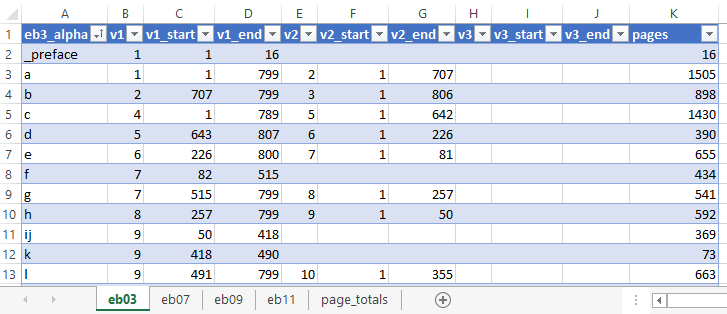
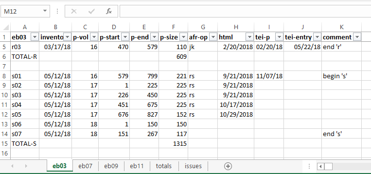

Identify the Print Pages
Use the print-pagination file to look up page numbers
-
Open the records/print-pagination spreadsheet. Select the
tab on the bottom for the correct edition.
Figure 1. Print-pagination spreadsheet 
- Locate the letter of the alphabet you need in the first column. Looking across the row, you will see the volume, start page and end page for the letter (v1, v1_start, and v1_end). If the entries continue in a second or third volume, those page number are listed in the next columns (E-J). Finally, the total number of pages for each letter is listed in the last column (pages).
-
Calculate the number of sections and their
size. In the illustration above, the letter "k" is only 73 pages so it will need
one section. The letter "d" needs one section for vol. 5 (164 pages), and one
section for vol. 6 (226 pages).
It is best to make all sections within a volume roughly equal in size. Letter "a" has 799 pages in vol. 1, slightly more than can fit in three sections of 250-pages each. You could creating 3 sections of 250 pages and throw the rest into a very small section of 49 pages. But it is easier on the OCR operator to create four equal sections: 799 / 4 = 199.75. That will be three sections of 200 pages and one of 199.
-
Map out the page range for all sections
and name them (see Section Folder). For example, below is how we
map the letter "a". It indicates the print volume before the page name,
separated with a period:
Table 1. The letter "a" section start page end page total pages eb03-a01 1.1 1.200 200 eb03-a02 1.201 1.400 200 eb03-a03 1.401 1.600 200 eb03-a04 1.601 1.799 199 eb03-a05 2.1 2.236 236 eb03-a06 2.237 2.472 236 eb03-a07 2.473 2.707 235 -
We need to record this information about the content of each page section carefully. Open the
records/production spreadsheet. Select the tab on the
bottom for the correct edition.
Figure 2. Production spreadsheet 
- The first column (A) lists page section names. To the right is a column for the print-volume number (p-vol), start and end pages (p-start and p-end), and the total number of pages in the section (p-size).
- Following the same format, carefully enter the information on the page range for each new page section. Leave the inventory column empty for the moment. We will fill that in later, when we create the necessary page-inventory files.